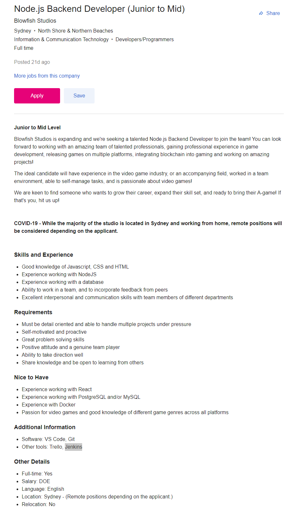

Name - Evan Phelps
Student ID - S3934101
Student Email - S3934101@student.rmit.edu.au
I am a 23-year-old musician, born in Leeds up in the UK, but I will always consider Australia to really be my home, after growing up in Perth.
While living in the middle of Australia for a few years, I first picked up the guitar, which soon became a lifelong pursuit and eventually even lead to a contemporary music performance Bachelor's degree from a college near London, called the Academy of Contemporary Music.
With that behind me, I've turned my sights towards IT and programming, a field I've always had a passing interest in, but now I'm taking a much bigger plunge into study to hopefully make this a true career option.
As a kid growing up, I was always more absorbed in books and computers than social activities, and this naturally led to an interest in the systems behind all the games and software I used on a daily basis. In my early years of high school, with nothing but a school-issued laptop, I found myself some introductory Python tutorials and learned the basics so I at least understood the general principles of software development, but never pursued it further - aside from occasional very brief sojourns into HTML, Lua, even a short-lived look at Javascript once upon a time.
I found the Intro to IT/Programming RMIT courses through Open Universities, and it looked like they would be the most ideal fit for my current level of experience. The online nature of the courses meant that it would likely be less stressful than a more full-time, in-person course, which is good as I've previously had anxiety issues while studying full-time and this is a way for me to reacclimate first.
Although I am primarily here to study the harder-science programming half of the two courses, I do also expect to gain a much richer cultural and social understanding of the role that IT continues to play in a rapidly evolving digital world.
Backend Developer - on Seek.com
This posting by Blowfish Studios is asking for a junior-to-mid-level backend Node.JS developer. While the posting itself isn't overtly clear on the specific nature of the position (similar to many postings that I looked at), it can be inferred that as a game development studio looking for experience with React (a javascript UI tool), Docker (a platform for bundling code into self-contained apps), as well as an assortment of other tools such as CSS and HTML, the position will be a diverse range of game development tasks, primarily focused on scripting and probably some form of web design.
Right now, although I have do have some prior experience with HTML and CSS (as you can see from this page!) it would not be nearly enough to consider myself comfortable, and certainly not professional with the software. I also haven't yet particularly probed into the realm of Javascript, which most of the required elements for this job posting seem to run on, like React and Node.JS, so in addition to delving more deeply into web design projects for HTML and CSS experience, I would likely need to study Javascript very indepth.
In addition, though this particular job posting doesn't really ask for it, I think that along the way I should set up a professional Github page and fill it out with future projects, to help demonstrate both my familiarity with Git and with the required platforms/languages.
Of course, while this position is full time, it is a junior/mid-level position at the end of the day. A position such as this is exactly what I'd need to really gloss up a resume for future employment in more senior positions, thereby making it easier and easier to find IT work - one of the things that has become quite clear after scrolling through postings on Seek.com is that many currently in-demand positions require multiple years of experience with a myriad different development environments. I'd want to do a role like this not only because it's a much better introduction to the field while being remote-friendly, but specifically because of how it could positively influence my future prospects.
This is not an easy question to answer. Online tests are, invariably, shaky science at best - it simply isn't possible to actually gauge an accurate psychological profile of a person based purely on an algorithm behind a short online quiz. In particular, the Myers-Briggs Type Indicator is especially bad for this and quite probably the outright worst case of junk science being presented with a veneer of legitimacy to the uneducated. It is absurd from the very premise of attempting to sort the entire human spectrum of thoughts and feelings into 4 (sometimes 5) completely binary categories for a total of just 16 concrete "types". In fact, psychology as an entire field largely disavows personality tests, especially the MBTI. The tests can give different result at different times of one's life or even simply when in a different mood (for example, this is my first time getting this specific result! Previous attempts apparently trended more towards introversion.) The few pieces of research that do correlate and support the theory of the MBTI are largely produced by the same group: the Center for Applications of Psychological Type, an organization run by the Myers-Briggs Foundation. Said Foundation also offers pricey accreditation programs that claim to qualify one to administer the test, and the MBTI "industry" (as one could describe it) rakes in $20 million per year as a result.
Despite this... it cannot be denied that companies LOVE the MBTI. It, and similar tests, are routinely considered for team-building exercises, profiling, and even interview results. To me, then, these tests are meaningless. An awful fad that won't die, and that continues to shape public and corporate perception on the predictability of human behaviour. But at the same time, that corporate perception means I must silently accept that fact, and smile along regardless, because to do otherwise would have potential career-damaging implications.
With the above screed out of the way, at this point it should go somewhat without saying that I do not believe these results would at all influence the way I behave or treat other people, whether based on their results or mine. I already do not consider it worth my time even remembering what was gained on such a quiz, and it is my firm belief that should one wish to understand their team and the people in it, one should actually talk to those people. Social interaction and working with someone will paint a far better picture of who they are, than a four letter acronym or hazily-qualified test result.
Same as above really. The closest that any one test comes to being worth taking into account is most likely one that tests for "learning styles". Everyone has their own way that they best retain and process information, and it does no one any favours to ignore that fact and force people to conform wholly to your ideal in that regard. Some people only truly learn with hands-on experience, and it's important to allow those people to attain that hands-on experience, letting them make mistakes and learning from them (assuming the mistakes aren't critical in nature or could cause the implosion of an entire project, of course!) Of course, if one wants to form a team it may still behoove one to at least take prior learning style knowledge into account, and select from those who most closely align with yours.
After much thought surrounding what direction to take my possible project idea, I eventually settled on something that would help the community of players of the online game Final Fantasy XIV - specifically, the “hunt” community. Within the game systems, hunting certain special enemies in large organised groups of players (called Hunt Trains) is one of the primary ways people earn rewards at high levels of content, and hundreds and thousands of players across the world participate in these trains on a daily basis. However, they require a good deal of prior organisation; within each large map zone is two of those special enemies (known as “marks”), which totals 12 marks across the 6 zones, and their spawn locations are both randomly positioned (though there is a predefined list of possible locations that can narrow it down) and randomly timed (after a mark is killed, it cannot respawn for 4 hours, and then there’s a 2-hour window in which it has a chance to spawn, scaling from 0% to 100% by the end of the 2 hours).
For this reason, the hunt community employs “scouts”, players who take the time to run through all of the zones, checking off each spawn location and writing down the marks when found. These are later passed to train conductors, who use the marks to plan routes through the zones and lead the train in an orderly fashion.
My idea then would be an online, multi-purpose, tool to help both scouts and conductors in their business. This tool would have interactive maps of each zone, with pre-programmed buttons on the maps for each of the potential spawning locations. Each server has its own unique set, so somewhere in the UI there would be a dropdown menu for selecting one’s server, then when a scout discovers a mark for their server they can click the button for their current location and select which of the two marks they had found to record it on the map/in a list.
Once a zone is finished, or possibly when a button is manually pressed, the tool should be able to automatically generate routes. Biggest potential obstacle here of course is probably the infamous Travelling Salesman problem, but as far as I can see that should be much less of an issue when it only needs 2 or 3 points per zone, and all the zones are independent. There are certain points in each zone that players on the train can teleport to, so I believe the most sensible solution would be to measure the marks’ distance to each of those teleport points, find which of them is the shortest, and then make that teleport point the “entrance” to the zone. The following path would then simply be straight to the closest mark, and then straight to the second mark.
This route can then be stored as a list of map coordinates, and exported out as some form of text file. Ideally, to be honest, this would somehow be integrated as a mod for FFXIV itself so that the route could be directly imported as in-game Flag objects which can be stored on the in-game map, though I’m not entirely certain how possible it is to mod such a thing in. If it is possible I would certainly like to do that, however.
At any rate, the map coordinates can (through whatever means) be picked up by conductors after the fact and then used for a train, having been automatically sorted into the order of shortest routes.
This would then entail part 2 of the program; as the train runs through each zone, the conductor can access a full list of marks. When the train kills a mark, the conductor (or anyone else approved to do such things) finds its name and marks it as dead, starting a 4 hour timer on the scouting screen. When the 4 hours have elapsed, this converts into a timer counting up from zero, so scouts can then use this to determine whether or not that mark has spawned (or at least, they can gauge the approximate chance that it has), effectively starting the whole process over again. It is worth noting that there isn’t a hard cap on the second timer, as if a mark is left untouched for too long it actually despawns and resets its own timer.
Being a fairly simple program despite its versatility, this could be done in a solid variety of programming environments. It could be hosted entirely in a browser with copious Javascript/HTML, but alternatively could be packaged as a standalone app in probably any common language, such as Python, Java. The standalone would certainly be useful for the potential modding into the game as described earlier, so that would probably be the best route, even though it would require extra knowledge of the code behind FFXIV and that makes other mods work.
In terms of other skills and requirements, the biggest one I can think of is that the data tracked by the app needs to be permanently hosted somewhere. I would need to research options for database hosting most likely, or failing that I would have some form of lightweight local machine running 24/7 to host the marks and timers. Still, these sorts of things are clearly quite feasible as other projects in other games have quite successfully been put together for similar purposes.
Finally, should the program/app function as ideally intended, the result would be that the entire hunt community, a vast network of players, would have a universal tool to coordinate and run trains. It would be efficient, fast, and endlessly versatile for future expansions and game updates, even should the game developers add whole new servers, communities, and so forth. It would also hopefully add some level of “officiality” to those people using it, as right now there’s a notable problem of certain rogue players running their own trains completely separate from the more concentrated hunt community.